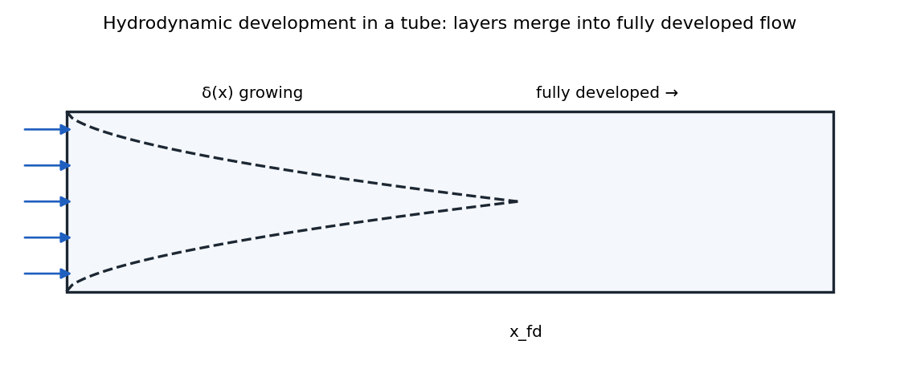
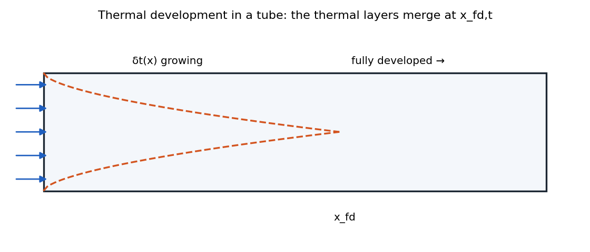
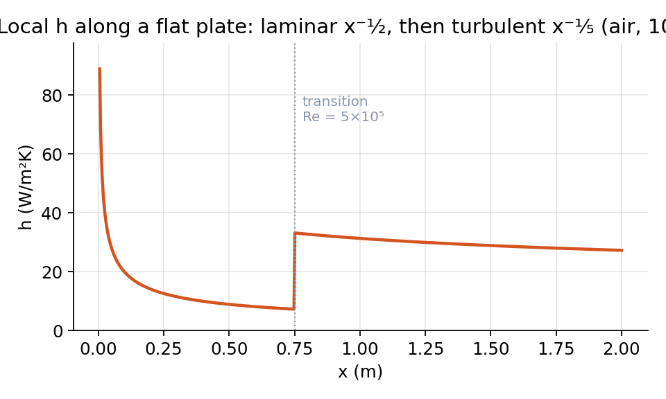
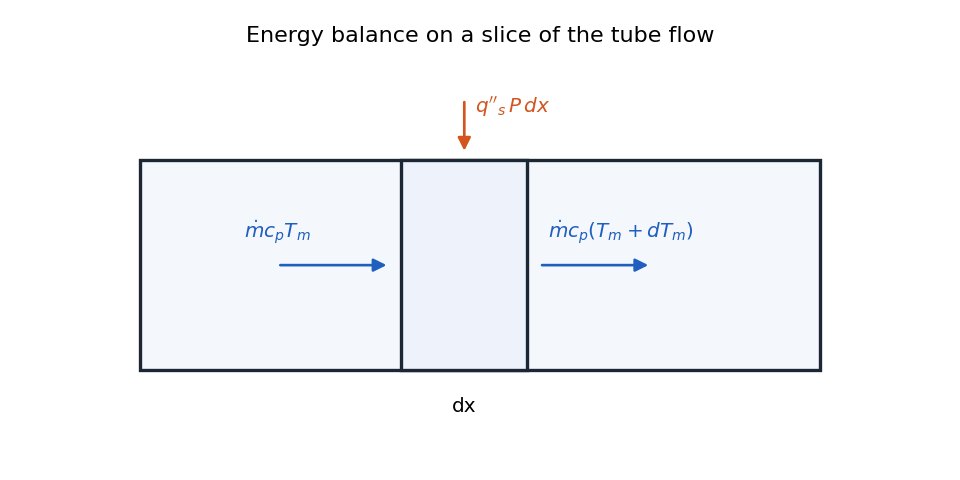
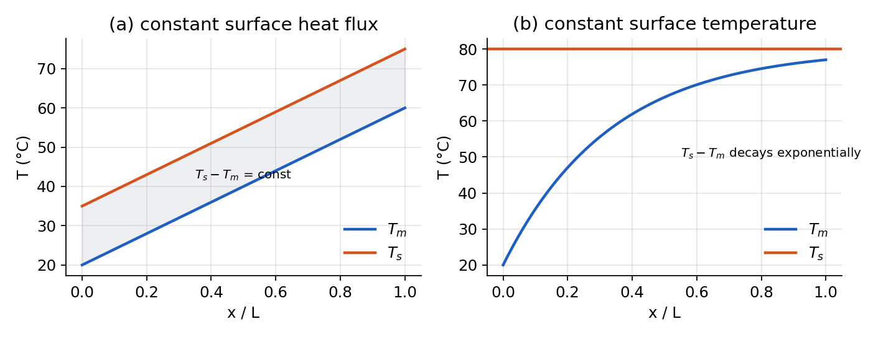
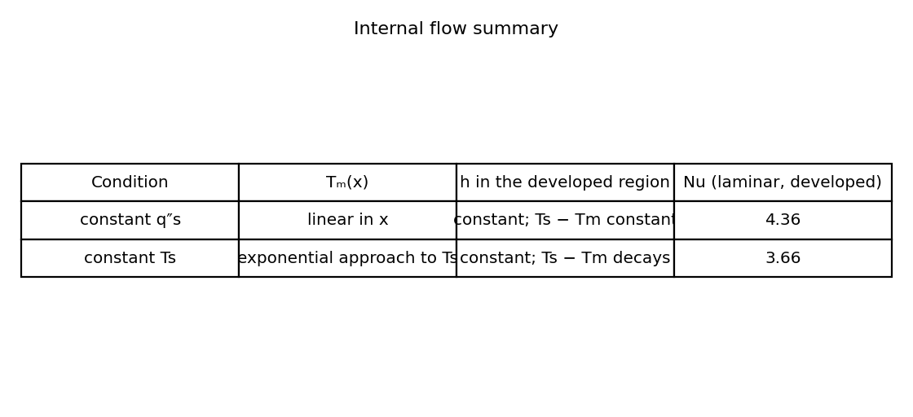

Internal Flow¶
Internal Flow Heat Transfer¶
Internal flows differ fundamentally from external flows in several important ways:
| External Flow | Internal Flow |
|---|---|
| Heat transfer between surface and free-stream temperature \(T_\infty\) | Heat transfer between surface and local bulk temperature (varying temperature) |
| Boundary layer grows continuously | Boundary layers grow until they meet, becoming fully developed |
| \(\text{Re}_x\) varies with position along surface | \(\text{Re}_D\) is constant throughout the flow |
| changing \(\operatorname{Re}_{x,c}\) lead to different types of flows | Same flow type for all \(\operatorname{Re}_{D,c}\) at different \(x\) |
| \(h_x = q''_x/(T_s - \textcolor{red}{T_\infty})\) | \(h_x = q''_x/(T_s - \textcolor{red}{T_m})\) |

For internal flows, the boundary layer development creates distinct flow regions:
-
Hydrodynamic entrance region (developing velocity profile)
-
Hydrodynamic fully developed region (constant velocity profile)

Similarly for thermal boundary layers
-
Thermal entrance region (developing temperature profile)
-
Thermally fully developed region (constant shape temperature profile)
Internal Flow Concepts for Pipe Flow¶
When fluid enters a pipe, boundary layers develop along the walls. Eventually, these boundary layers meet at the centerline, and the flow becomes fully developed.
The critical Reynolds number for circular pipe flow is approximately
Regarding flow type in pipes:
However, for heat transfer purposes, any flow with \(\text{Re}_D > 2300\) is treated as turbulent because even transitional flows exhibit significant mixing that dominates over molecular diffusion.
Definition
For flow in circular pipe:
Mean velocity:¶
Mean velocity can be defined as
for cicular pipe:
- mass flow rate:
where \(u_m\) is mean velocity and \(A_c = \pi D^4/4\). It can be shown
Definition
- Reynolds number:
Definition
where \(D_h = 4A/P\) called hydraulic diameter. For uniform pipe, \(u_m = u_{in}\).
Velocity Profile in Fully Developed Flow¶
For fully developed laminar flow in a circular pipe, the velocity profile is parabolic:
The maximum velocity at the centerline is twice the mean velocity:
The mean velocity is related to the pressure gradient by:
yielding
Definition
Friction Factor¶
The friction factor can be defined in two ways:
- Darcy (or Moody) friction factor:
- Fanning friction factor:
For a fully developed circular pipe in laminar flow with smooth surface4, the relationship is:
Note that \(f = 4C_f\) for pipe flow. It’s crucial to identify which definition is being used in a specific context.
Thermal Analysis of Internal Flow¶
There are two cases:
-
constant surface temperature
-
constant heat flux
Each case has their own equation and properties.
Definition
The thermal entry length:
Bulk Temperature¶
The bulk (or mean) temperature is defined as the mixing cup temperature that would result if the flow at a given cross-section were collected and mixed adiabatically.
Definition
General formula:
If \(c_p\) and \(\rho\) are constant and given \(\dot{m} = \rho u_m A_c\), we’ll have
Newton’s cooling law for internal flow¶
We no longer have \(T_\infty\), but we have \(T_m\) which is not constant:
Thermally Fully Developed Condition¶
A flow is considered thermally fully developed when the dimensionless temperature profile no longer changes with axial position:
This implies that while temperatures may change with position, the shape of the temperature profile remains constant.
Convection heat transfer coefficient in fully developed region¶
For the case of constant surface temperature, in the thermally fully developed region, this simplifies to:
So
A mathematical consequence of thermal fully developed flow is that the local heat transfer coefficient becomes constant:
which means \(h\) is constant.

Energy Analysis of Internal Flow¶
Key Assumptions¶
For most internal flow analyses, we make the following assumptions:
- Neglect axial conduction - Justified by comparing advection to axial conduction:
For typical water flow at 1 m/s with temperature change of 100°C over 1 m:
This means axial conduction contributes less than one part per million to the heat transfer.
-
Incompressible flow - Valid for liquids and gases at low speeds
-
Constant properties - Can be evaluated at the bulk temperature or film temperature
-
No internal heat generation - Unless specifically considered in the problem
Internal Flow Analysis and Temperature Distributions¶
Energy Balance in Internal Flows¶
For internal flows, we perform an energy balance on a control volume between \(x\) and \(x+dx\):

Energy in:
-
Advection: \(\dot{m}c_pT_m\)
-
Heat through surface: \(q''_sP\,dx\)
Energy out:
- Advection: \(\dot{m}c_p(T_m + dT_m)\)
For steady state, the balance yields:
Or:
Using the definition of heat transfer coefficient:
The energy balance becomes:
Case 1: Constant Heat Flux¶
For constant heat flux (\(q''_s = \text{constant}\)), the mean temperature increases linearly:
Therefore:
where \(T_{m,i}\) is the inlet temperature.
The surface temperature can be determined from:
Definition
In the fully developed region where \(h\) is constant, the surface temperature also increases linearly with the same slope as the bulk temperature, maintaining a constant temperature difference:
In the entrance region, the heat transfer coefficient is higher, resulting in a smaller temperature difference near the inlet. The surface temperature profile will have a non-linear portion in the entrance region before becoming linear in the fully developed region.
Case 2: Constant Surface Temperature¶
For constant surface temperature (\(T_s = \text{constant}\)), the energy balance is:
Assuming \(\bar{h}\) is constant (valid for the fully developed region), this can be integrated:
Definition
The mean temperature approaches the surface temperature exponentially, Figure 1. It can be proven over a pipe of length \(L\)
Definition
The total heat transfer rate is:
Definition

Log Mean Temperature Difference (LMTD)¶
For heat exchanger applications, it’s useful to define the log mean temperature difference:
where:
-
\(\Delta T_i = T_s - T_i\) (inlet temperature difference)
-
\(\Delta T_o = T_s - T_o\) (outlet temperature difference)
This allows the total heat transfer to be expressed simply as:
Definition
The LMTD is useful for heat exchanger design because:
-
It represents an effective temperature difference for the entire heat exchanger
-
It’s convenient for experimental measurements (only need inlet and outlet temperatures)
-
It simplifies heat exchanger calculations
Internal heat flow summary¶

Entry Length Considerations¶
While the entry region has higher heat transfer coefficients, it’s often a small portion of the total heat exchanger length. Most practical applications focus on the fully developed region because:
-
The entry region is usually short compared to the total length
-
Outlet temperature is often more important than high local heat transfer rates
-
For cooling systems with radiators, higher outlet temperatures can reduce radiator size
-
Mathematical analysis is much simpler in the fully developed region
For typical fluids like air or water with Prandtl numbers around 1, the hydrodynamic and thermal entry lengths are similar. For turbulent flow, the entry length is approximately 10 pipe diameters.
Nusselt Numbers for Internal Flows¶
-
Determine where the flow is fully developed (both hydrodynamically and thermally)
-
Identify whether the flow is laminar or turbulent based on Reynolds number
-
Select the appropriate Nusselt number correlation based on flow regime.
Definition
For fully developed flow we have:
-
Laminar flow (\(\text{Re}_D < 2300\)):
-
For constant surface temperature: \(\text{Nu}_D = 3.66\)
-
For constant heat flux: \(\text{Nu}_D = 4.36\)
-
-
Turbulent flow (\(\text{Re}_D > 2300\)):
- Dittus-Boelter equation:
- $n = 0.3$ for cooling ($T_s < T_m$)
- $n = 0.4$ for heating ($T_s > T_m$)
Note that in real applications, pipe surfaces may have conditions between constant temperature and constant heat flux. The true Nusselt number would typically fall between the two limiting values provided for laminar flow.